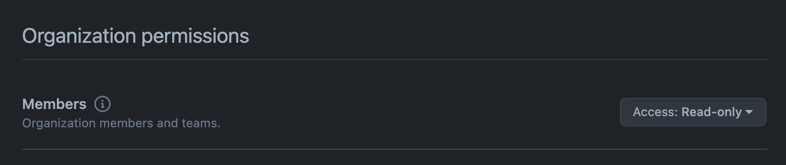
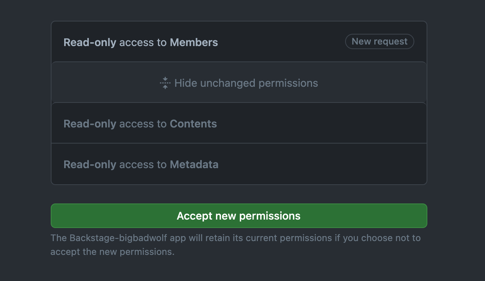

The Backstage catalog can be set up to ingest organizational data - users and
teams - directly from an organization in GitHub or GitHub Enterprise. The result
is a hierarchy of
User and
Group kind
entities that mirror your org setup.
Note: This adds
UserandGroupentities to the catalog, but does not provide authentication. See the GitHub auth provider for that.
Installation without Events Support
This guide will use the Entity Provider method. If you for some reason prefer the Processor method (not recommended), it is described separately below.
The provider is not installed by default, therefore you have to add a dependency
to @backstage/plugin-catalog-backend-module-github to your backend package.
# From your Backstage root directory
yarn add --cwd packages/backend @backstage/plugin-catalog-backend-module-github
Note: When configuring to use a Provider instead of a Processor you do not need to add a location pointing to your GitHub server/organization
Update the catalog plugin initialization in your backend to add the provider and schedule it:
```ts title="packages/backend/src/plugins/catalog.ts" / highlight-add-next-line / import { GithubOrgEntityProvider } from '@backstage/plugin-catalog-backend-module-github';
export default async function createPlugin(
env: PluginEnvironment,
): Promise
/ highlight-add-start / // The org URL below needs to match a configured integrations.github entry // specified in your app-config. builder.addEntityProvider( GithubOrgEntityProvider.fromConfig(env.config, { id: 'production', orgUrl: 'https://github.com/backstage', logger: env.logger, schedule: env.scheduler.createScheduledTaskRunner({ frequency: { minutes: 60 }, timeout: { minutes: 15 }, }), }), ); / highlight-add-end /
// .. }
Alternatively, if you wish to ingest data from multiple GitHub organizations you can use
the `GithubMultiOrgEntityProvider` instead. Note that by default, this provider will namespace
groups according to the org they originate from to avoid potential name duplicates:
```ts title="packages/backend/src/plugins/catalog.ts"
/* highlight-add-next-line */
import { GithubMultiOrgEntityProvider } from '@backstage/plugin-catalog-backend-module-github';
export default async function createPlugin(
env: PluginEnvironment,
): Promise<Router> {
const builder = await CatalogBuilder.create(env);
/* highlight-add-start */
// The GitHub URL below needs to match a configured integrations.github entry
// specified in your app-config.
builder.addEntityProvider(
GithubMultiOrgEntityProvider.fromConfig(env.config, {
id: 'production',
githubUrl: 'https://github.com',
// Set the following to list the GitHub orgs you wish to ingest from. You can
// also omit this option to ingest all orgs accessible by your GitHub integration
orgs: ['org-a', 'org-b'],
logger: env.logger,
schedule: env.scheduler.createScheduledTaskRunner({
frequency: { minutes: 60 },
timeout: { minutes: 15 },
}),
}),
);
/* highlight-add-end */
// ..
}
Installation with Events Support
Please follow the installation instructions at
- https://github.com/backstage/backstage/tree/master/plugins/events-backend/README.md
- https://github.com/backstage/backstage/tree/master/plugins/events-backend-module-github/README.md
Additionally, you need to decide how you want to receive events from external sources like
Set up your provider
```ts title="packages/backend/src/plugins/catalog.ts" import { CatalogBuilder } from '@backstage/plugin-catalog-backend'; / highlight-add-next-line / import { GithubOrgEntityProvider } from '@backstage/plugin-catalog-backend-module-github'; import { ScaffolderEntitiesProcessor } from '@backstage/plugin-scaffolder-backend'; import { Router } from 'express'; import { PluginEnvironment } from '../types';
export default async function createPlugin(
env: PluginEnvironment,
): Promise
Or, alternatively, if using the `GithubMultiOrgEntityProvider`:
```ts title="packages/backend/src/plugins/catalog.ts"
/* highlight-add-next-line */
import { GithubMultiOrgEntityProvider } from '@backstage/plugin-catalog-backend-module-github';
export default async function createPlugin(
env: PluginEnvironment,
): Promise<Router> {
const builder = await CatalogBuilder.create(env);
/* highlight-add-start */
// The GitHub URL below needs to match a configured integrations.github entry
// specified in your app-config.
builder.addEntityProvider(
GithubMultiOrgEntityProvider.fromConfig(env.config, {
id: 'production',
githubUrl: 'https://github.com',
// Set the following to list the GitHub orgs you wish to ingest from. You can
// also omit this option to ingest all orgs accessible by your GitHub integration
orgs: ['org-a', 'org-b'],
logger: env.logger,
schedule: env.scheduler.createScheduledTaskRunner({
frequency: { minutes: 60 },
timeout: { minutes: 15 },
}),
// Pass in the eventBroker to allow this provider to subscribe to GitHub events
eventBroker: env.eventBroker,
}),
);
/* highlight-add-end */
// ..
}
You can check the official docs to configure your webhook and to secure your request.
The webhook will need to be configured to forward organization,team and membership events.
Configuration
As mentioned above, you also must have some configuration in your app-config that describes the targets that you want to import. This lets the entity provider know what authorization to use, and what the API endpoints are. You may or may not have such an entry already added since before:
integrations:
github:
# example for public github
- host: github.com
token: ${GITHUB_TOKEN}
# example for a private GitHub Enterprise instance
- host: ghe.example.net
apiBaseUrl: https://ghe.example.net/api/v3
token: ${GHE_TOKEN}
These examples use ${} placeholders to reference environment variables. This
is often suitable for production setups, but also means that you will have to
supply those variables to the backend as it starts up. If you want, for local
development in particular, you can experiment first by putting the actual tokens
in a mirrored config directly in your app-config.local.yaml as well.
If Backstage is configured to use GitHub Apps authentication you must grant
Read-Only access for Members under Organization in order to ingest users
correctly. You can modify the app's permissions under the organization settings,
https://github.com/organizations/{ORG}/settings/apps/{APP_NAME}/permissions.

Please note that when you change permissions, the app owner will get an email that must be approved first before the changes are applied.

Custom Transformers
You can inject your own transformation logic to help map from GH API responses into backstage entities. You can do this on the user and team requests to enable you to do further processing or updates to the entities.
To enable this you pass a function into the GitHubOrgEntityProvider. You can
pass a UserTransformer, TeamTransformer or both. The function is invoked
for each item (user or team) that is returned from the API. You can either
return an Entity (User or Group) or undefined if you do not want to import
that item.
There is also a defaultUserTransformer and defaultOrganizationTeamTransformer.
You could use these and simply decorate the response from the default
transformation if you only need to change a few properties.
Resolving GitHub users via organization email
When you authenticate users you should resolve them to an entity within the catalog. Often the authentication you use could be a corporate SSO system that provides you with email as a key. To enable you to find and resolve GitHub users it's useful to also import the private domain verified emails into the User entity in backstage.
The integration attempts to return organizationVerifiedDomainEmails from the
GitHub API and makes this available as part of the object passed to
UserTransformer. The GitHub API will only return emails that use a domain
that's a verified domain for your GitHub Org. It also relies on the user having
configured such an email in their own account. The API will only return these
values when using GitHub App authentication and with the correct app permission
allowing access to emails.
You can decorate the defaultUserTransformer to replace the org email in the
returned identity.
async (user, ctx): Promise<UserEntity | undefined> => {
const entity = await defaultUserTransformer(user, ctx);
if (entity && user.organizationVerifiedDomainEmails?.length) {
entity.spec.profile!.email = user.organizationVerifiedDomainEmails[0];
}
return entity;
},
Once you have imported the emails you can resolve users in your sign-in in resolver using the catalog entity search via email
```typescript title="packages/backend/src/plugins/auth.ts" ctx.signInWithCatalogUser({ filter: { kind: ['User'], 'spec.profile.email': email as string, }, });
## Using a Processor instead of a Provider
An alternative to using the Provider for ingesting organizational entities is to
use a Processor. This is the old way that's based on registering locations with
the proper type and target, triggering the processor to run.
The drawback of this method is that it will leave orphaned Group/User entities
whenever they are deleted on your GitHub server, and you cannot control the
frequency with which they are refreshed, separately from other processors.
### Processor Installation
The `GithubOrgReaderProcessor` is not registered by default, so you have to
install and register it in the catalog plugin:
```bash
# From your Backstage root directory
yarn add --cwd packages/backend @backstage/plugin-catalog-backend-module-github
```typescript title="packages/backend/src/plugins/catalog.ts" import { GithubOrgReaderProcessor } from '@backstage/plugin-catalog-backend-module-github';
builder.addProcessor( GithubOrgReaderProcessor.fromConfig(env.config, { logger: env.logger }), );
### Processor Configuration
The integration section of your app-config needs to be set up in the same way as
for the Entity Provider - see above.
In addition to that, you typically want to add a few static locations to your
app-config, which reference your organizations to import. The following
configuration enables an import of the teams and users under the org
`https://github.com/my-org-name` on public GitHub.
```yaml
catalog:
locations:
- type: github-org
target: https://github.com/my-org-name
rules:
- allow: [User, Group]